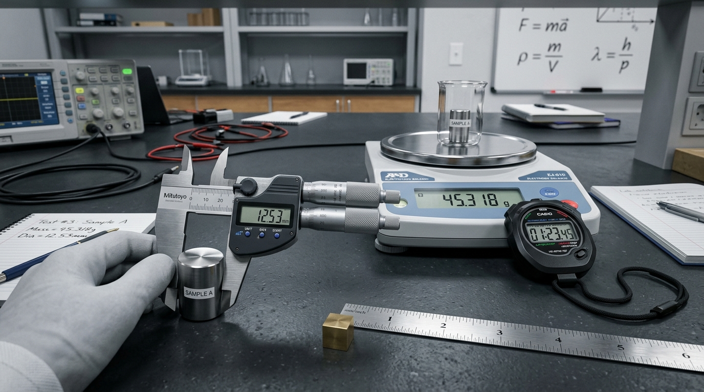

Bài 3: Thực Hành Tính Sai Số Trong Phép Đo. Ghi Kết Quả Đo

Hệ thống dụng cụ đo lường độ dài, khối lượng & thời gian chuẩn xác
NỘI DUNG BÀI HỌC
1. Phép Đo Trực Tiếp & Phép Đo Gián Tiếp
Phép đo một đại lượng vật lí là phép so sánh đại lượng đó với đại lượng cùng loại được chọn làm đơn vị đo thông qua các dụng cụ đo chuyên dụng.
Là phép đo mà giá trị của đại lượng cần đo được đọc trực tiếp trên dụng cụ đo (Ví dụ: Dùng thước kẹp đo chiều dài $L$, dùng cân điện tử đo khối lượng $m$, dùng nhiệt kế đo nhiệt độ $t$).
Là phép xác định giá trị của đại lượng cần đo thông qua công thức toán học liên hệ với các đại lượng đo trực tiếp (Ví dụ: Tính tốc độ $v = rac{s}{t}$, tính khối lượng riêng $ ho = rac{m}{V}$).
2. Phân Loại Các Loại Sai Số Trong Phép Đo
Trong quá trình đo đạc thực nghiệm, sai số luôn xuất hiện và được chia làm 2 loại chính dựa trên nguyên nhân gây ra:
- Sai số hệ thống (Sai số dụng cụ $\Delta A_{dc}$): Do đặc điểm cấu tạo của dụng cụ đo (lệch vạch 0 ban đầu) hoặc quy chuẩn thiết bị. Sai số hệ thống làm kết quả đo luôn lệch về một phía cố định (lớn hơn hoặc nhỏ hơn giá trị thực). Quy ước: $\Delta A_{dc}$ bằng một độ chia nhỏ nhất (ĐCNN) hoặc một nửa ĐCNN.
- Sai số ngẫu nhiên ($\overline{\Delta A}$): Do sự tác động ngẫu nhiên từ môi trường (nhiệt độ, luồng gió, độ ẩm) hoặc phản xạ không đều tay của người đo. Để giảm thiểu sai số ngẫu nhiên, ta thực hiện phép đo lặp lại nhiều lần ($n$ lần) và lấy giá trị trung bình cộng $\overline{A}$.
Quy trình tính toán sai số tuyệt đối, sai số tỉ đối & biểu diễn kết quả đo chuẩn
3. Quy Tắc Tính Sai Số Phép Đo Trực Tiếp & Ghi Kết Quả Đo
Khi thực hiện phép đo trực tiếp đại lượng $A$ lặp lại $n$ lần thu được các giá trị $A_1, A_2, ..., A_n$, quy trình xử lý số liệu tiến hành qua 4 bước:
Tính giá trị trung bình $\overline{A}$:
$$\overline{A} = rac{A_1 + A_2 + ... + A_n}{n}$$
Tính sai số ngẫu nhiên trung bình $\overline{\Delta A}$:
$$\Delta A_i = |\overline{A} - A_i| \Rightarrow \overline{\Delta A} = rac{\Delta A_1 + \Delta A_2 + ... + \Delta A_n}{n}$$
Tính sai số tuyệt đối toàn phần $\Delta A$:
$$\Delta A = \overline{\Delta A} + \Delta A_{dc}$$
Biểu diễn kết quả đo & Sai số tỉ đối $\delta A$:
Kết quả đo ghi dưới dạng: $A = \overline{A} \pm \Delta A$. Sai số tỉ đối đại diện cho độ chính xác: $\delta A = rac{\Delta A}{\overline{A}} \cdot 100\%$.
4. Quy Tắc Tính Sai Số Cho Phép Đo Gián Tiếp
Để xác định sai số của đại lượng đo gián tiếp từ các đại lượng đo trực tiếp, ta áp dụng 2 quy tắc vàng sau:
Đối với đại lượng $Y = A + B$ hoặc $Y = A - B$, sai số tuyệt đối của tổng hoặc hiệu bằng tổng các sai số tuyệt đối thành phần: $$\Delta Y = \Delta A + \Delta B$$
Đối với đại lượng $Z = X \cdot Y$ hoặc $Z = rac{X}{Y}$, sai số tỉ đối của tích hoặc thương bằng tổng các sai số tỉ đối thành phần: $$\delta Z = \delta X + \delta Y$$
📌 Phép đo trực tiếp vs Gián tiếp: Đọc trực tiếp trên dụng cụ là phép đo trực tiếp ($L, m, t$); tính qua công thức liên hệ là phép đo gián tiếp ($v, ho$).
📌 Phân loại sai số: Sai số hệ thống do dụng cụ làm kết quả luôn lệch 1 phía; Sai số ngẫu nhiên do môi trường/người đo được khắc phục bằng cách đo lặp lại nhiều lần lấy giá trị trung bình $\overline{A}$.
📌 Công thức ghi kết quả đo: $A = \overline{A} \pm \Delta A$ (với $\Delta A = \overline{\Delta A} + \Delta A_{dc}$). Sai số tỉ đối $\delta A = rac{\Delta A}{\overline{A}} \cdot 100\%$.
📌 Sai số gián tiếp: Tổng/Hiệu có sai số tuyệt đối bằng tổng các sai số tuyệt đối ($\Delta Y = \Delta A + \Delta B$); Tích/Thương có sai số tỉ đối bằng tổng các sai số tỉ đối ($\delta Z = \delta X + \delta Y$).